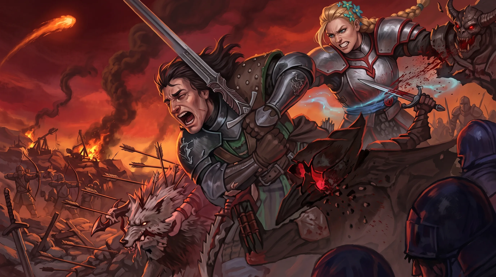

Tears of Metal Launches on Xbox Game Pass July 22, 2026 — Everything You Need to Know About Paper Cult's Scottish Co-op Roguelike

Tears of Metal is launching into Early Access on Xbox Game Pass for PC, Steam, and the Microsoft Store on July 22, 2026 — and if you haven't been tracking this one, the numbers make the case immediately. Developed by independent studio Paper Cult, this medieval Scottish hack-and-slash co-op roguelike has accumulated over 400,000 Steam wishlists since its Summer Game Fest 2024 reveal, placing it among the most community-endorsed indie titles of the year. Game Pass subscribers get access on Day 1 at no additional cost. Xbox Series X and Xbox Series S console players will need to wait until closer to the end of 2026 for their version.
The "Scottish Dynasty Warriors" comparison that has followed Tears of Metal since its reveal is accurate and useful: players command a Scottish battalion through escalating waves of enemies, carving through hordes in the fast, crowd-driven style that defines the genre — but layered with co-op multiplayer, roguelike run structure, deep build customization across your army, and a settlement expansion system between campaigns. The central narrative drives toward uncovering the mystery of the Dragon Meteor and reclaiming a Scottish island from an enemy invasion. With a Game Pass PC day-one launch eliminating the barrier to entry, July 22 is the moment two years of community anticipation finally meets the actual product.
What Is Tears of Metal? Paper Cult's Scottish Co-op Roguelike — Setting, Story, and Studio Background
Tears of Metal is the debut title from Paper Cult, an independent studio that has spent years building what it describes as a dynasty-style action game with genuine roguelike depth and co-op at its structural core. The "Scottish Dynasty Warriors" label that emerged after the Summer Game Fest 2024 reveal is apt shorthand — but it undersells the mechanical complexity Paper Cult has built. Where a traditional Dynasty Warriors title places a single legendary warrior at the center of mass-combat chaos, Tears of Metal frames the experience around leading and fighting alongside a Scottish battalion, giving individual engagements a different texture of scale, role distribution, and tactical coordination. You are not the one-man army. You are the tip of one.
The narrative gives the action a purposeful direction. Players begin on a Scottish island that has been overrun by an enemy invasion, and the mystery at the heart of the campaign is the Dragon Meteor — an unexplained celestial event that appears to have catalyzed or empowered the forces occupying the land. Uncovering what the Dragon Meteor means, what it has done to the island and its people, and what must be sacrificed to drive out the invasion provides the kind of layered story motivation that separates a compelling action roguelike from one that treats narrative as decorative. Paper Cult has committed to building both.
The community response to the reveal made the demand visible in concrete numbers. Paper Cult's first public showing came at Summer Game Fest in June 2024 — one of gaming's highest-profile reveal windows, where dozens of titles compete for attention simultaneously. Tears of Metal cut through. Over 400,000 Steam wishlists accumulated in the months following the reveal, a figure reached through organic player interest rather than paid acquisition campaigns. A game reaching 400,000 wishlists before a single Early Access build is available, and doing so primarily through players watching a reveal and immediately deciding they want it, is one of the more reliable signals of genuine market demand the industry has. Paper Cult has built something people are actively waiting for.
Tears of Metal Xbox Game Pass Release Date — July 22, 2026 Early Access and Xbox Console Timeline
The confirmed Early Access launch date is July 22, 2026, with simultaneous availability across three PC platforms: Xbox Game Pass for PC, Steam, and the Microsoft Store. The multi-platform simultaneous PC launch is a deliberate strategic position. By launching across all three distribution channels on the same day, Paper Cult maximizes Day 1 discovery and ensures that the game benefits from the full force of community momentum — the social media activity, streaming coverage, and word-of-mouth from co-op groups that forms around a major indie launch — rather than fragmenting that energy across a staggered release schedule.
The Xbox Game Pass for PC inclusion is the most consequential element of the launch strategy. Tears of Metal entering Game Pass on launch day means it is immediately available to millions of active subscribers at no additional cost — no purchase decision required, no $30 or $40 ask standing between a curious player and their first session. For a co-op roguelike, this matters in a way that it might not for single-player titles: co-op games live and die by how many people are actively playing. Game Pass day-one availability directly translates to a larger active player base, more populated co-op lobbies on Day 1, and faster discovery of what the game's community identity becomes in its Early Access period.
Xbox console players are on a separate timeline. Microsoft's announcement confirmed that the Xbox Series X and Xbox Series S versions of Tears of Metal are expected closer to the end of 2026, several months after the PC Early Access period begins. This phased approach has become increasingly common for indie studios entering Early Access: launching on PC first allows the developer to gather performance data, community feedback on difficulty, balancing, and content, and iterate rapidly before committing to a console certification process that requires the game to meet platform-specific standards and a higher baseline of polish. For Paper Cult, the PC Early Access period is not just a commercial window — it is part of the development process for the console release.
Tears of Metal Gameplay Explained — Co-op Combat, Army Builds, and Settlement Expansion
The core gameplay loop of Tears of Metal operates on a structure that roguelike veterans will find immediately legible, but the co-op battalion-combat execution gives it a distinct mechanical identity. Each run sends players into procedurally structured missions where they fight through escalating enemy encounters with their Scottish battalion. The moment-to-moment combat is fast, crowd-focused, and built specifically for the satisfaction of group coordination — whether that group consists of human co-op partners or AI-controlled battalion members filling equivalent roles in a solo session.
The upgrade and build system represents one of Tears of Metal's deeper mechanical investments. Between missions within a run, players access a progression layer of powerful upgrades that feed into customizable builds — defined combat specializations that determine how your character and battalion perform in encounters. The system is designed to support meaningful role differentiation within a co-op group: two players in the same session can develop toward entirely different combat functions, creating complementary team compositions rather than having everyone optimize identically. This design principle matters for replayability — if every run with the same friend group produces the same build combinations, co-op roguelikes lose their staying power quickly. Paper Cult's approach targets the opposite outcome.
Unlockable army skills add another dimension to the progression system, one that rewards sustained investment in the game across multiple runs. As players progress, they unlock new capabilities for their battalions — specialized combat behaviors, tactical options, and unit roles that expand what the army can do in a given encounter. These unlocks carry long-term weight: players who invest time in Tears of Metal are building toward a progressively more capable battalion, not resetting to the same baseline with each session. The roguelike structure means individual runs still carry loss risk and procedural variety, but the underlying army development layer creates a persistent sense of advancement that keeps players returning.
Settlement expansion is the between-run strategic layer that anchors the experience beyond individual campaign missions. After completing or failing a run, players return to their home settlement and apply resources gathered during gameplay to expand and upgrade their base — unlocking new facilities, recruitable characters, and equipment options that carry forward into future runs. The settlement system is mechanical, not cosmetic: what you build determines what options are available at the start of your next run, and investment compounds over time. For co-op groups looking for an experience with shared persistent stakes — where what the group builds together across sessions actually matters — the settlement layer provides exactly that kind of long-term co-op ownership that single-session games cannot offer.
Key Takeaways
- Tears of Metal launches into Early Access on July 22, 2026 via Xbox Game Pass for PC, Steam, and the Microsoft Store simultaneously — developed by Paper Cult as a medieval Scottish hack-and-slash co-op roguelike.
- The game supports both solo and co-op play with fully customizable battalion builds, unlockable army skills that persist across runs, and a settlement expansion system that gives co-op groups shared long-term progression.
- With over 400,000 Steam wishlists earned organically since the Summer Game Fest 2024 reveal, Tears of Metal enters Early Access as one of the most community-anticipated indie launches of 2026 — and Game Pass day-one access removes any barrier to trying it.
Also Read
More Gaming stories →Frequently Asked Questions
When does Tears of Metal launch on Xbox Game Pass?
Tears of Metal enters Early Access on July 22, 2026, simultaneously available via Xbox Game Pass for PC, Steam, and the Microsoft Store. Game Pass subscribers can access the title on Day 1 at no additional cost. Xbox Series X and Xbox Series S players are on a separate timeline — the console version is expected closer to the end of 2026, following the PC Early Access period during which Paper Cult will incorporate community feedback and iterate on performance and content before console certification.
What type of game is Tears of Metal?
Tears of Metal is a medieval hack-and-slash co-op roguelike developed by independent studio Paper Cult. Widely described as "Scottish Dynasty Warriors," the game places players in command of a Scottish battalion fighting through large-scale enemy encounters with fast-paced, crowd-driven combat. The narrative centers on uncovering the mystery of the Dragon Meteor and reclaiming a Scottish island from enemy invaders. Gameplay layers include deep build customization, unlockable army skills, roguelike run structure with procedural variety, and a between-run settlement expansion system that provides persistent co-op progression.
Does Tears of Metal support co-op multiplayer?
Yes. Co-op multiplayer is a foundational feature of Tears of Metal, allowing multiple players to fight together with their own builds and battalion roles in shared sessions. The game is also fully playable solo, with AI companions adapting to fill roles that co-op partners would otherwise handle — without restricting access to build options, army skills, or settlement progression. Both solo and co-op modes offer the same full narrative and mechanical experience; the difference is in coordination and role distribution across the battalion.
How many Steam wishlists does Tears of Metal have?
As of its Early Access launch announcement, Tears of Metal has surpassed 400,000 Steam wishlists — accumulated since the game's public debut at Summer Game Fest in June 2024. This figure was built through organic player interest after the reveal, without a paid marketing campaign, placing Tears of Metal among the most community-endorsed indie titles heading into Early Access in 2026. Reaching 400,000 wishlists before any playable build was publicly available is a meaningful indicator of the authentic demand Paper Cult has generated for the title.
Will Tears of Metal launch on Xbox Series X and Xbox Series S?
Yes, but the console launch follows the PC Early Access release on a separate timeline. The July 22, 2026 launch covers PC only — via Xbox Game Pass for PC, Steam, and the Microsoft Store. The Xbox Series X and Xbox Series S version is expected closer to the end of 2026. Paper Cult's approach of launching PC Early Access first allows the studio to address performance, balancing, and content issues based on community feedback before committing to the console certification process, which requires a higher baseline of stability and polish than Early Access on PC.
Who is developing Tears of Metal and when was it announced?
Tears of Metal is developed by Paper Cult, an independent game studio. The game made its public debut at Summer Game Fest in June 2024, immediately generating significant community interest with its Scottish medieval setting, dynasty-style combat system, and co-op roguelike structure. Paper Cult's decision to launch via PC Early Access before a full console release reflects a community-informed development philosophy — one that allows player feedback during the Early Access period to directly shape the game before it reaches its widest intended audience on Xbox consoles later in 2026.
Conclusion
Tears of Metal Xbox Game Pass represents exactly the kind of launch the platform was built around: a high-quality indie title with a clear identity, 400,000 wishlists of demonstrated demand, and a Day 1 Game Pass availability that removes every barrier between a curious subscriber and their first session. Paper Cult has spent two years building community anticipation for a "Scottish Dynasty Warriors" co-op roguelike — a genre combination specific enough to have a defined audience but broad enough to reach well beyond it. July 22, 2026 is when that anticipation meets reality, and the Early Access period will determine how much of that wishlist audience becomes an active, invested player community.
For Game Pass PC subscribers, the path is straightforward: add Tears of Metal to your library on July 22 and coordinate with co-op partners for a launch day session. The structural DNA of the game — co-op focus, deep build customization, roguelike replayability, persistent settlement progression — is well-matched to the Game Pass model, where zero barrier to entry means word-of-mouth from an active co-op community can build sustained momentum across the platform far faster than a traditional paid launch allows. Each player who loads in on Day 1 and immediately calls a friend to co-op is doing exactly the organic discovery work that makes roguelikes with community staying power thrive.
The Xbox console version arriving later in 2026 will be the second chapter of Tears of Metal's story — and potentially its largest audience moment, especially given the context of Xbox hardware price increases shifting more players toward Game Pass as the primary access point for Xbox gaming experiences. For now, Paper Cult's journey from Summer Game Fest 2024 reveal to July 22, 2026 Early Access launch is a two-year story of community-building executed with intention. The real test begins the moment servers open and 400,000 wishlist additions become active players with screenshots, co-op session logs, and opinions about the Dragon Meteor's lore.

Marcus J. Holloway
Senior Tech Educator & AI Researcher
Technology and gaming journalist with 15+ years of experience covering Nintendo, Sony, and Microsoft platforms. Has tracked Zelda franchise developments across every generation from N64 to Switch 2. Dedicated to making complex gaming industry developments accessible to readers worldwide through Ultimate Schooling.
💬 Questions or Comments?
Have a question about this tutorial or want to share your thoughts? Leave a comment below!